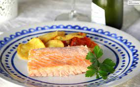

Salmon al horno

300x168 px
Salmon al horno facil de preparar para 2 personas
ingredientes
- Salmon fresco lomo 2
- Mayonesa
- Clara de huevo
- Diente de ajo
- Limon
- Sal
metodo de preparacion
- horno con calor arriba y abajo a 200 grados
- Limpiamos y secamos los lomos del salmon(sin escamas)
- Sazonamos con una fuente de horno(ajo, mayonesa, limon, sal, clara de huevo)
- tiramos la fuente arriba del salmon luego de 10 minutos de coccion al horno